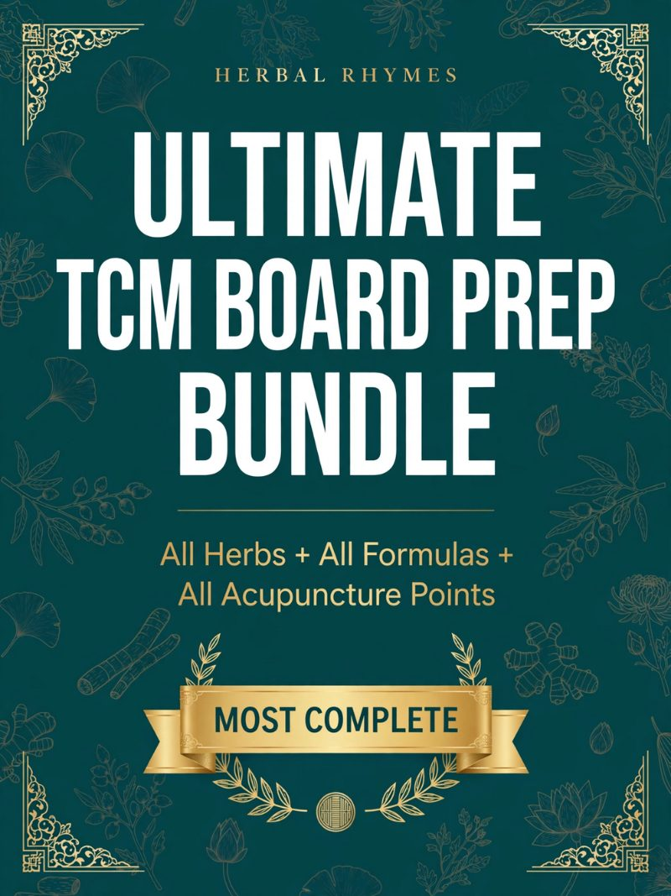
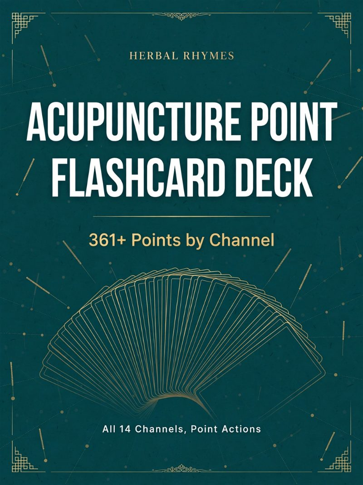

By Dr. Stacy Peck, DACM, L.Ac.
If you are sitting for the boards this winter or spring, the exam you are studying for is not the one your classmates took last year. On September 1, 2026, NCBAHM (formerly NCCAOM) put new content outlines into effect for all four modules — Foundations of Oriental Medicine, Acupuncture with Point Location, Chinese Herbology, and Biomedicine — based on its 2024 Job Analysis.1 Anyone testing on or after that date is scored against the new blueprints.2
The subject matter did not change. The weighting did, in some cases dramatically. This post lays out exactly what moved, module by module, with before-and-after numbers pulled from the official outlines, and then translates that into five concrete adjustments to your study plan. I will also be honest about which parts of the new exam my own materials cover and which they do not.
What changed (and what didn’t)
Here is NCBAHM’s own summary of the update: the purpose “is not to introduce new subject matter” but to reorganize content domains so they reflect how practitioners “think, assess, and make clinical decisions,” with “shifts in percentage weighting across domains” and “a greater emphasis on clinical reasoning, safety, and professional responsibility.”1
What stayed the same:
- Format. Each module is still 100 items, computer-adaptive, 2.5 hours, offered year-round.3
- Core bibliography. For Herbology, Bensky’s Materia Medica (3rd ed., 2004) and Scheid/Bensky’s Formulas & Strategies (Portable 2nd ed., 2015) remain the listed references. For Acupuncture, Deadman’s A Manual of Acupuncture (2nd ed.), Cheng Xinnong’s Chinese Acupuncture and Moxibustion (4th ed.), and Maciocia’s Practice of Chinese Medicine (3rd ed.) are listed.4,5 NCBAHM states it does not endorse any single text or third-party study guide; the outline itself is the primary study resource.
- The appendices. The Herbology outline still carries an Appendix A of individual herbs and Appendix C of formulas — and now adds Appendix B (herb pairs, Dui Yao) and Appendix D (obsolete substances such as pangolin scale, rhino horn, tiger bone, bear bile, and cinnabar) for which you are expected to know the original actions, why they are no longer used, and the standard substitutions.4
Chinese Herbology: the biggest shift
| 2020 outline (through Aug 31, 2026) | 2026 outline (from Sept 1, 2026) |
|---|---|
| I. Safety and Quality of Chinese Herbs — 10% | I. Chinese Herbs, Herbal Combinations and Herbal Formulas — 22% (individual herbs & pairs 11%, formulas 11%) |
| II. Treatment Planning and Strategies — 70% | II. Safety and Quality Control — 24% |
| III. Patient Management — 20% | III. Treatment Planning and Administration — 30% (formulation 22%, administration 8%) |
| IV. Treatment Evaluation and Modification — 24% |
Sources: 2020 CH Content Outline (NCCAOM, effective Jan 1, 2020); 2026 CH Content Outline with Bibliography (NCBAHM, effective Sept 1, 2026).4,6
Read the right-hand column carefully, because it is the single most important fact about the new herbology exam: safety is now 24% of your score, up from 10%. That domain covers cautions and contraindications (allergies, life stage, pregnancy), toxicity, herb–drug interactions, the Eighteen Incompatibilities and Nineteen Antagonisms, endangered-species substitutions, cGMP and quality control, and identification of raw herbs. Under the old outline you could be weak here and pass. Under the new one, a quarter of the exam lives in this domain.
Meanwhile, pure recall of herbs, pairs, and formulas is carved out as its own 22% domain. That is good news and bad news. Good: it is bounded, it is listed in the appendices, and it is the fastest 22% on the exam to lock in. Bad: the remaining 54% (Domains III and IV) is clinical reasoning — choosing and modifying a formula from a case — and you cannot reason about formulas you have not memorized. Recall is the floor, not the ceiling.
Acupuncture with Point Location
| 2020 outline | 2026 outline |
|---|---|
| I. Safety and Professional Responsibilities — 15% | I. Acupuncture Point Location — 15% |
| II. Treatment Plan — 50% | II. Safety for Acupuncture Practice — 15% |
| III. Treatment Techniques — 20% | III. Treatment Planning — 40% (selection of methods 25%, point selection 15%) |
| IV. Acupuncture Point Location — 15% | IV. Treatment Techniques — 30% (acupuncture 15%, moxibustion 5%, adjunctive therapies 10%) |
Sources: 2020 ACPL Content Outline; 2026 ACPL Content Outline with Bibliography (NCBAHM, effective Sept 1, 2026).5,6
Point location holds at 15% — identified on images and by cun measurement and landmarks. The notable move is treatment techniques, up from 20% to 30%, with moxibustion and adjunctive therapies (cupping, gua sha, ear seeds, electro) now explicitly weighted. Point selection is its own 15% sub-domain inside treatment planning, which means knowing a point’s category and functions — not just where it is — is tested directly.
Biomedicine and Foundations
Biomedicine was restructured from two domains (Biomedical Model 80%, Safety and Professional Responsibilities 20%) into four: Biomedical Sciences 18%, Patient Evaluation 26%, Analysis and Clinical Decision-making 34%, Professional Responsibilities 22%.6,7 The practical effect is that pharmacology, supplements, and anatomy recall are now a smaller slice (18%), while red-flag recognition, referral decisions, informed consent, scope, and emergency management are a much larger one. Biomedicine has historically had the lowest first-time pass rate of the three acupuncture modules — 2025 first-time rates reported in NCBAHM’s 2026 Candidate Preparation Handbook were roughly 92% for FOM, 80% for ACPL, and 69% for Biomedicine — so this restructure deserves attention.9
Foundations of Oriental Medicine moved from Clinical Examination Methods 35% / Assessment and Differential Diagnosis 35% / Treatment Principle and Strategy 30% to a three-domain structure that third-party prep publishers report as Patient Assessment 28% / Pathomechanisms and Pattern Differentiation 38% / Treatment Planning 34%.6,8 I could not open NCBAHM’s own FOM PDF while writing this, so treat those three numbers as reported rather than verified, and confirm them on the NCBAHM content outlines page before you build a schedule around them. The direction is consistent with the other modules: a little less on raw examination findings, more on pattern logic and treatment planning.
Five changes to make to your study plan
- Front-load recall, then stop. Herbs, pairs, and formulas are 22% of CH. Lock them in fast — mnemonics and spaced repetition are the proven tools — and then move your hours to application. Students who spend six months on single-herb flashcards and two weeks on cases are now studying for the old exam.
- Give safety its own study block. It is 24% of CH and 15% of ACPL. Make a dedicated deck for the Eighteen Incompatibilities, Nineteen Antagonisms, pregnancy contraindications, toxic-dose herbs, common herb–drug interactions (warfarin, anticoagulants, sedatives), and the Appendix D obsolete substances with their substitutions. This is the highest-yield new work on the exam.
- Practice case-to-formula, every day. Domains III and IV of CH (54%) and Domain III of ACPL (40%) are “given this presentation, what do you select, and how do you modify it when it doesn’t work?” Take one pattern a day, write the formula, then write the modification for two complications. Formula families make this far faster than memorizing 180 prescriptions in isolation — see my post on formula families.
- Learn point categories, not just locations. Point selection (15%) tests function: five shu, yuan-source, luo-connecting, xi-cleft, front-mu, back-shu, confluent points. Location is tested separately (15%). Study them as two skills.
- Add moxa and adjunctive techniques to your ACPL review. Together they are 15% of the acupuncture exam now. Indications, contraindications, and safety for moxibustion, cupping, gua sha, and electroacupuncture are explicitly in the outline.
Where Herbal Rhymes fits (and where it doesn’t)
I want to be straight with you, because the new outline makes this clearer than ever. Herbal Rhymes products are built for the recall domains: Domain I of Herbology (herbs, pairs, formulas — 22%) and the point location and point-category knowledge behind Domains I and III of Acupuncture. They are mnemonic study systems — rhymes, flashcards, and category cheat sheets — designed to get that bounded knowledge into long-term memory in weeks instead of months, so you can spend the rest of your prep on cases and safety. They do not cover Domain II safety or cGMP, and they are not a substitute for Bensky, Scheid, or Deadman. Use them to take recall off the table early; use the bibliography texts for the rest.

Ultimate TCM Board Prep Bundle — $89.95
Every Herbal Rhymes digital product in one download: mnemonic rhymes for 217 single herbs and 128 formulas, herb and formula flashcards built for spaced repetition, category cheat sheets, the 361+ acupoint flashcard deck, point-category and channel reference sheets. Covers the recall domains of both CH and ACPL.
Get the Ultimate Bundle
Acupuncture Point Flashcard Deck — 361+ Points — $18.95
Location by landmark and cun, plus category and key functions on every card — the two skills the 2026 ACPL outline now tests separately.
Get the Acupoint DeckPrefer a book? Herbal Rhymes: Formulas Edition and Herbal Rhymes: Single Herbs Edition, 2nd Ed. are on Amazon in Kindle and paperback. Both are being cross-checked against the 2026 appendices and Bensky’s 3rd edition, and the Kindle editions will be updated as that work completes. The free sample flashcards are the fastest way to see whether the mnemonic approach works for your brain before you spend anything.
Sources
- NCBAHM, School News Brief: April 2026, “Exam Content Outline Updates.” ncbahm.org/about-us/press/nccaom-school-news/
- NCBAHM, Newsletter: April 2026, Message from the Chair and CEO: “Applicants testing on or after September 1, 2026, will be assessed using the updated outlines.”
- NCBAHM, Exam Administration: year-round adaptive testing; 100 items / 2.5 hours per module.
- NCBAHM, Chinese Herbology Content Outline with Bibliography, January 2026, effective September 1, 2026 (PDF).
- NCBAHM, Acupuncture with Point Location Content Outline with Bibliography, January 2026, effective September 1, 2026 (PDF).
- NCCAOM, 2020 Content Outlines for CH, ACPL, BIO and FOM (effective January 1, 2020), as reproduced in the 2022 Candidate Preparation Handbooks.
- NCBAHM, Biomedicine Content Outline, effective September 1, 2026. ncbahm.org/ncbahm-bio-examcontent/
- 2026 FOM domain weights as reported by third-party exam-prep publishers; not independently verified against the NCBAHM PDF at time of writing.
- NCBAHM, 2026 Candidate Preparation Handbook for Acupuncture Certification, 2025 pass rates for Route 1 U.S. first-time candidates (as reported by third-party prep publishers).
Lock In the Recall Domains Fast
The Ultimate TCM Board Prep Bundle: mnemonic rhymes for 217 herbs and 128 formulas, spaced-repetition flashcards, category cheat sheets, and the 361+ acupoint deck — everything for the recall domains of the 2026 Herbology and Acupuncture exams, so you can spend the rest of your prep on cases and safety.
Get the Ultimate Bundle — $89.95Instant download · Try the free sample flashcards first